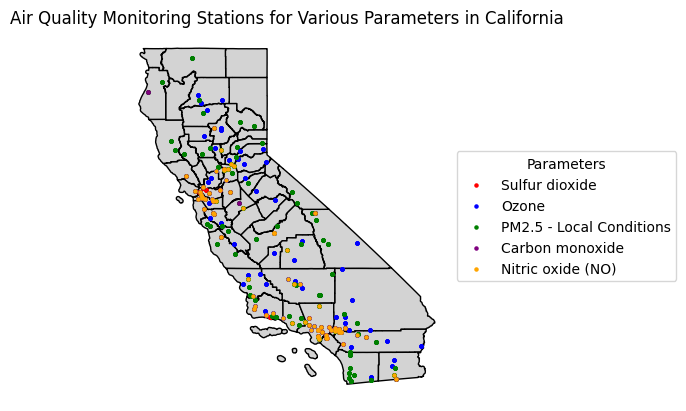
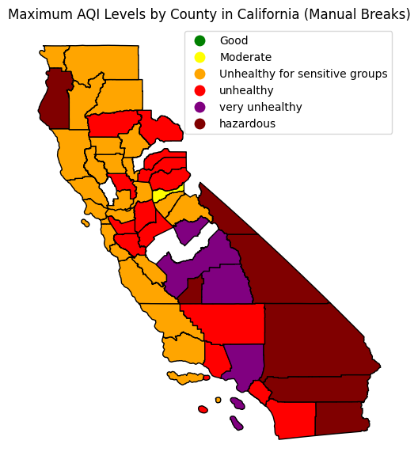

# California Intro
import pandas as pd
import geopandas as gpd
from shapely.geometry import Point
import matplotlib.pyplot as plt
from pygris import counties
from matplotlib.patches import Patch
from matplotlib.colors import ListedColormap
---------------------------------------------------------------------------
ModuleNotFoundError Traceback (most recent call last)
Cell In[2], line 2
1 import pandas as pd
----> 2 import geopandas as gpd
3 from shapely.geometry import Point
4 import matplotlib.pyplot as plt
ModuleNotFoundError: No module named 'geopandas'
# Get the default TIGER/Line file for counties in California
ca_tiger = counties(state="CA", cache=True)
Using the default year of 2021
Using FIPS code '06' for input 'CA'
print(ca_tiger.columns)
Index(['STATEFP', 'COUNTYFP', 'COUNTYNS', 'GEOID', 'NAME', 'NAMELSAD', 'LSAD',
'CLASSFP', 'MTFCC', 'CSAFP', 'CBSAFP', 'METDIVFP', 'FUNCSTAT', 'ALAND',
'AWATER', 'INTPTLAT', 'INTPTLON', 'geometry'],
dtype='object')
# Get the current working directory
current_directory = os.getcwd()
# Construct the file path by joining the current directory with the relative path
csv_path = os.path.join(current_directory, 'Geoprogram', 'monitor.csv')
# Print the file path
print("CSV Path:", csv_path)
# Read the shapefile using the constructed file path
df = pd.read_csv(csv_path)
CSV Path: /home/bd2a404a-d050-4548-bcf4-7bee4e916ab9/Geoprogram/monitor.csv
# Define the list of parameters and corresponding colors
parameters_colors = {
'Sulfur dioxide': 'red',
'Ozone': 'blue',
'PM2.5 - Local Conditions': 'green',
'Carbon monoxide': 'purple',
'Nitric oxide (NO)': 'orange'
}
# Filter the DataFrame for monitors in California
california_df = df[df['State Name'].isin(['California'])]
display(california_df)
| State Code | County Code | Site Num | Parameter Code | POC | Latitude | Longitude | Datum | Parameter Name | Sample Duration | ... | 75th Percentile | 50th Percentile | 10th Percentile | Local Site Name | Address | State Name | County Name | City Name | CBSA Name | Date of Last Change | |
|---|---|---|---|---|---|---|---|---|---|---|---|---|---|---|---|---|---|---|---|---|---|
| 2646 | 6 | 1 | 7 | 42601 | 1 | 37.687526 | -121.784217 | WGS84 | Nitric oxide (NO) | 1 HOUR | ... | 0.400 | -0.500 | -0.900 | Livermore | 793 Rincon Ave. | California | Alameda | Livermore | San Francisco-Oakland-Hayward, CA | 2023-10-23 |
| 2647 | 6 | 1 | 7 | 42602 | 1 | 37.687526 | -121.784217 | WGS84 | Nitrogen dioxide (NO2) | 1 HOUR | ... | 19.900 | 10.600 | 2.700 | Livermore | 793 Rincon Ave. | California | Alameda | Livermore | San Francisco-Oakland-Hayward, CA | 2023-10-23 |
| 2648 | 6 | 1 | 7 | 42602 | 1 | 37.687526 | -121.784217 | WGS84 | Nitrogen dioxide (NO2) | 1 HOUR | ... | 6.200 | 2.900 | 0.900 | Livermore | 793 Rincon Ave. | California | Alameda | Livermore | San Francisco-Oakland-Hayward, CA | 2023-10-23 |
| 2649 | 6 | 1 | 7 | 42603 | 1 | 37.687526 | -121.784217 | WGS84 | Oxides of nitrogen (NOx) | 1 HOUR | ... | 6.100 | 2.600 | 0.200 | Livermore | 793 Rincon Ave. | California | Alameda | Livermore | San Francisco-Oakland-Hayward, CA | 2023-10-23 |
| 2650 | 6 | 1 | 7 | 44201 | 1 | 37.687526 | -121.784217 | WGS84 | Ozone | 1 HOUR | ... | 0.047 | 0.042 | 0.034 | Livermore | 793 Rincon Ave. | California | Alameda | Livermore | San Francisco-Oakland-Hayward, CA | 2023-10-23 |
| ... | ... | ... | ... | ... | ... | ... | ... | ... | ... | ... | ... | ... | ... | ... | ... | ... | ... | ... | ... | ... | ... |
| 8036 | 6 | 113 | 1003 | 88101 | 3 | 38.661210 | -121.732690 | WGS84 | PM2.5 - Local Conditions | 24-HR BLK AVG | ... | 5.200 | 3.900 | 2.000 | Woodland-Gibson Road | 41929 E. GIBSON ROAD, WOODLAND | California | Yolo | Woodland | Sacramento--Roseville--Arden-Arcade, CA | 2023-08-16 |
| 8037 | 6 | 113 | 1003 | 88101 | 3 | 38.661210 | -121.732690 | WGS84 | PM2.5 - Local Conditions | 24-HR BLK AVG | ... | 5.200 | 3.900 | 2.000 | Woodland-Gibson Road | 41929 E. GIBSON ROAD, WOODLAND | California | Yolo | Woodland | Sacramento--Roseville--Arden-Arcade, CA | 2023-08-16 |
| 8038 | 6 | 113 | 1003 | 88101 | 3 | 38.661210 | -121.732690 | WGS84 | PM2.5 - Local Conditions | 24-HR BLK AVG | ... | 5.200 | 3.900 | 2.000 | Woodland-Gibson Road | 41929 E. GIBSON ROAD, WOODLAND | California | Yolo | Woodland | Sacramento--Roseville--Arden-Arcade, CA | 2023-08-16 |
| 8039 | 6 | 113 | 2001 | 81102 | 1 | 38.571460 | -121.525790 | WGS84 | PM10 Total 0-10um STP | 24 HOUR | ... | 18.000 | 12.000 | 4.000 | West Sacramento-15th Street | 132 15TH ST., WEST SACRAMENTO | California | Yolo | West Sacramento | Sacramento--Roseville--Arden-Arcade, CA | 2023-10-06 |
| 8040 | 6 | 113 | 2001 | 85101 | 1 | 38.571460 | -121.525790 | WGS84 | PM10 - LC | 24 HOUR | ... | 19.000 | 12.000 | 4.000 | West Sacramento-15th Street | 132 15TH ST., WEST SACRAMENTO | California | Yolo | West Sacramento | Sacramento--Roseville--Arden-Arcade, CA | 2023-10-06 |
5395 rows × 55 columns
# Plot the map of California using ca_tiger directly
fig, ax = plt.subplots(figsize=(10, 8))
ca_tiger.plot(ax=ax, color='lightgray', edgecolor='black')
<Axes: >
# Create an empty plot
fig, ax = plt.subplots()
ca_tiger.plot(ax=ax, color='lightgray', edgecolor='black')
# Iterate through each parameter and plot points on the map
for parameter, color in parameters_colors.items():
# Filter the DataFrame for the current parameter
filtered_df = california_df[california_df['Parameter Name'] == parameter]
# Convert the filtered DataFrame to a GeoDataFrame with Point geometries
geometry = [Point(xy) for xy in zip(filtered_df['Longitude'], filtered_df['Latitude'])]
crs = 'EPSG:4269' # NAD 83
gdf_points = gpd.GeoDataFrame(filtered_df, geometry=geometry, crs=crs)
# Plot the GeoDataFrame as points with specified color and label
gdf_points.plot(ax=ax, color=color, markersize=5, label=parameter)
# Remove ticks from both axes
ax.set_xticks([])
ax.set_yticks([])
# Turn off the entire axis
ax.set_axis_off()
# Add legend outside the plot
plt.legend(loc='center left', bbox_to_anchor=(1, 0.5), title='Parameters')
plt.title('Air Quality Monitoring Stations for Various Parameters in California')
plt.xlabel('Longitude')
plt.ylabel('Latitude')
plt.show()

import geopandas as gpd
import matplotlib.pyplot as plt
from matplotlib.colors import ListedColormap
# Assuming ca_tiger is retrieved using a function or method
# Load air quality data from CSV
california_df = pd.read_csv('/home/bd2a404a-d050-4548-bcf4-7bee4e916ab9/Geoprogram/concentration.csv')
# Merge California counties shapefile with air quality data from DataFrame
county_aqi = ca_tiger.merge(california_df, left_on='NAME', right_on='County')
# Define manual breaks and corresponding colors
bins = [0, 50, 100, 150, 200, 300]
colors = ['green', 'yellow', 'orange', 'red', 'purple', 'maroon']
# Create a colormap using the specified colors
cmap_custom = ListedColormap(colors)
# Plot choropleth map based on AQI levels using manual breaks and custom colormap
fig, axes = plt.subplots(1, 1, figsize=(10, 6))
# Plot the geometries (counties) using the respective data column and manual breaks scheme
county_aqi.plot(column='Max AQI', ax=axes, legend=True,
cmap=cmap_custom, edgecolor='black',
scheme='UserDefined', classification_kwds={'bins': bins[:-1]},
legend_kwds={'labels': ['Good', 'Moderate', 'Unhealthy for sensitive groups', 'unhealthy', 'very unhealthy', 'hazardous']})
# Set title and axis off
axes.set_title('Maximum AQI Levels by County in California')
axes.axis('off')
# Adjust layout and display the plot
plt.tight_layout()
plt.show()

import geopandas as gpd
import pandas as pd
import matplotlib.pyplot as plt
from matplotlib.colors import ListedColormap
# Assuming ca_tiger is retrieved using a function or method
# Load air quality data from CSV
california_df = pd.read_csv('/home/bd2a404a-d050-4548-bcf4-7bee4e916ab9/Geoprogram/concentration.csv')
# Merge California counties shapefile with air quality data from DataFrame
county_aqi = ca_tiger.merge(california_df, left_on='NAME', right_on='County')
# Calculate percentages for each category based on Days with AQI
categories = ['Moderate Days', 'Unhealthy for Sensitive Groups Days', 'Very Unhealthy Days', 'Hazardous Days']
total_days_aqi = county_aqi['Days with AQI']
for category in categories:
county_aqi[f'{category} Percentage'] = (county_aqi[category] / total_days_aqi) * 100
# Create a custom colormap with red as the maximum color
colors = ['#a6d96a', '#ffffbf', '#fdbb84', '#fc8d59', '#d73027'] # Red added at the end
cmap_custom = ListedColormap(colors)
# Plot choropleth maps for each category with individual legends and custom colormap
fig, axes = plt.subplots(2, 2, figsize=(12, 10))
for category, ax in zip(categories, axes.flatten()):
county_aqi.plot(column=f'{category} Percentage', cmap=cmap_custom, ax=ax, legend=True, scheme='quantiles', k=5, edgecolor='black', alpha=0.8)
ax.set_title(f'Percentage of {category} by County')
ax.axis('off')
legend = ax.get_legend()
legend.set_title(f'{category} Percentage')
legend.set_bbox_to_anchor((1.4, 1)) # Adjust the values (x, y) as needed to position the legend
# Adjust layout and display the plots
plt.tight_layout()
plt.show()
/home/bd2a404a-d050-4548-bcf4-7bee4e916ab9/.local/lib/python3.11/site-packages/mapclassify/classifiers.py:1592: UserWarning: Not enough unique values in array to form 5 classes. Setting k to 4.
self.bins = quantile(y, k=k)
/home/bd2a404a-d050-4548-bcf4-7bee4e916ab9/.local/lib/python3.11/site-packages/mapclassify/classifiers.py:1592: UserWarning: Not enough unique values in array to form 5 classes. Setting k to 2.
self.bins = quantile(y, k=k)
/home/bd2a404a-d050-4548-bcf4-7bee4e916ab9/.local/lib/python3.11/site-packages/mapclassify/classifiers.py:1592: UserWarning: Not enough unique values in array to form 5 classes. Setting k to 2.
self.bins = quantile(y, k=k)
# Filter rows based on parameter names
filtered_df = california_df[california_df['Parameter Name'].isin(['PM2.5 - Local Conditions', 'NO', 'Ozone', 'CO','Sulfur dioxide'])]
print(filtered_df)
State Code County Code Site Num Parameter Code POC Latitude \
2650 6 1 7 44201 1 37.687526
2651 6 1 7 44201 1 37.687526
2652 6 1 7 44201 1 37.687526
2653 6 1 7 44201 1 37.687526
2655 6 1 7 88101 3 37.687526
... ... ... ... ... ... ...
8034 6 113 1003 88101 3 38.661210
8035 6 113 1003 88101 3 38.661210
8036 6 113 1003 88101 3 38.661210
8037 6 113 1003 88101 3 38.661210
8038 6 113 1003 88101 3 38.661210
Longitude Datum Parameter Name Sample Duration \
2650 -121.784217 WGS84 Ozone 1 HOUR
2651 -121.784217 WGS84 Ozone 8-HR RUN AVG BEGIN HOUR
2652 -121.784217 WGS84 Ozone 8-HR RUN AVG BEGIN HOUR
2653 -121.784217 WGS84 Ozone 8-HR RUN AVG BEGIN HOUR
2655 -121.784217 WGS84 PM2.5 - Local Conditions 1 HOUR
... ... ... ... ...
8034 -121.732690 WGS84 PM2.5 - Local Conditions 24-HR BLK AVG
8035 -121.732690 WGS84 PM2.5 - Local Conditions 24-HR BLK AVG
8036 -121.732690 WGS84 PM2.5 - Local Conditions 24-HR BLK AVG
8037 -121.732690 WGS84 PM2.5 - Local Conditions 24-HR BLK AVG
8038 -121.732690 WGS84 PM2.5 - Local Conditions 24-HR BLK AVG
... 75th Percentile 50th Percentile 10th Percentile \
2650 ... 0.047 0.042 0.034
2651 ... 0.043 0.038 0.029
2652 ... 0.043 0.038 0.029
2653 ... 0.043 0.038 0.029
2655 ... 7.000 5.000 1.000
... ... ... ... ...
8034 ... 5.200 3.900 2.000
8035 ... 5.200 3.900 2.000
8036 ... 5.200 3.900 2.000
8037 ... 5.200 3.900 2.000
8038 ... 5.200 3.900 2.000
Local Site Name Address State Name \
2650 Livermore 793 Rincon Ave. California
2651 Livermore 793 Rincon Ave. California
2652 Livermore 793 Rincon Ave. California
2653 Livermore 793 Rincon Ave. California
2655 Livermore 793 Rincon Ave. California
... ... ... ...
8034 Woodland-Gibson Road 41929 E. GIBSON ROAD, WOODLAND California
8035 Woodland-Gibson Road 41929 E. GIBSON ROAD, WOODLAND California
8036 Woodland-Gibson Road 41929 E. GIBSON ROAD, WOODLAND California
8037 Woodland-Gibson Road 41929 E. GIBSON ROAD, WOODLAND California
8038 Woodland-Gibson Road 41929 E. GIBSON ROAD, WOODLAND California
County Name City Name CBSA Name \
2650 Alameda Livermore San Francisco-Oakland-Hayward, CA
2651 Alameda Livermore San Francisco-Oakland-Hayward, CA
2652 Alameda Livermore San Francisco-Oakland-Hayward, CA
2653 Alameda Livermore San Francisco-Oakland-Hayward, CA
2655 Alameda Livermore San Francisco-Oakland-Hayward, CA
... ... ... ...
8034 Yolo Woodland Sacramento--Roseville--Arden-Arcade, CA
8035 Yolo Woodland Sacramento--Roseville--Arden-Arcade, CA
8036 Yolo Woodland Sacramento--Roseville--Arden-Arcade, CA
8037 Yolo Woodland Sacramento--Roseville--Arden-Arcade, CA
8038 Yolo Woodland Sacramento--Roseville--Arden-Arcade, CA
Date of Last Change
2650 2023-10-23
2651 2023-10-23
2652 2023-10-23
2653 2023-10-23
2655 2023-10-23
... ...
8034 2023-08-16
8035 2023-08-16
8036 2023-08-16
8037 2023-08-16
8038 2023-08-16
[1636 rows x 55 columns]
import pandas as pd
# Assuming you have the filtered_df DataFrame
# Create a filename (replace 'air_quality_data.csv' with your desired name)
filename = 'air_quality_data.csv'
# Save the DataFrame to a CSV file
filtered_df.to_csv(filename, index=False)
print(f"Data successfully saved to: {filename}")
Data successfully saved to: air_quality_data.csv